Peaks, Rails & Storybook Villages
Panoramic trains, mountain viewpoints and village stays composed at a private, comfortable pace.
Switzerland Journeys
From lake cities to alpine villages, every route is privately curated for rhythm, comfort and meaningful moments.
Journey Themes
Panoramic trains, mountain viewpoints and village stays composed at a private, comfortable pace.
Lakefront cities, vineyard landscapes and wellness intervals designed for families and private groups.
Destinations
Iconic mountain settings and sophisticated lakefront cities brought together in one coherent private journey design.
Lake Cities
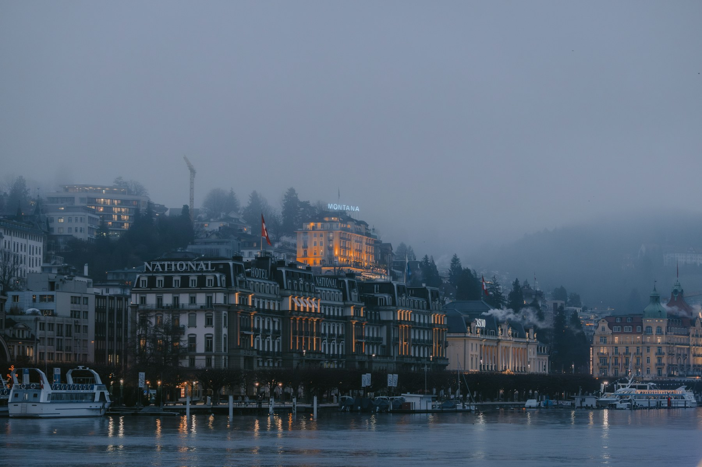
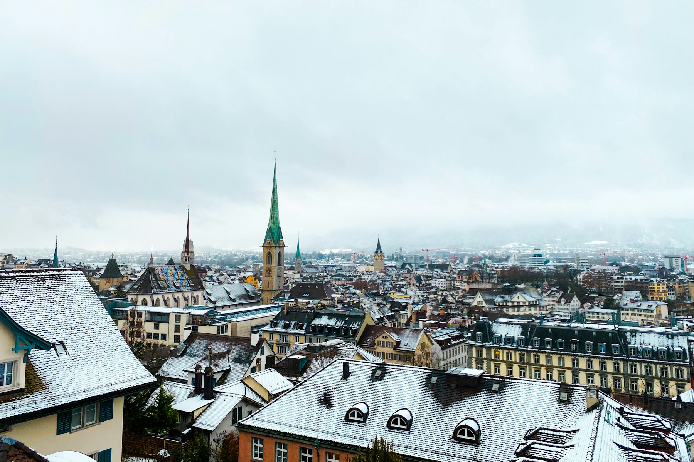
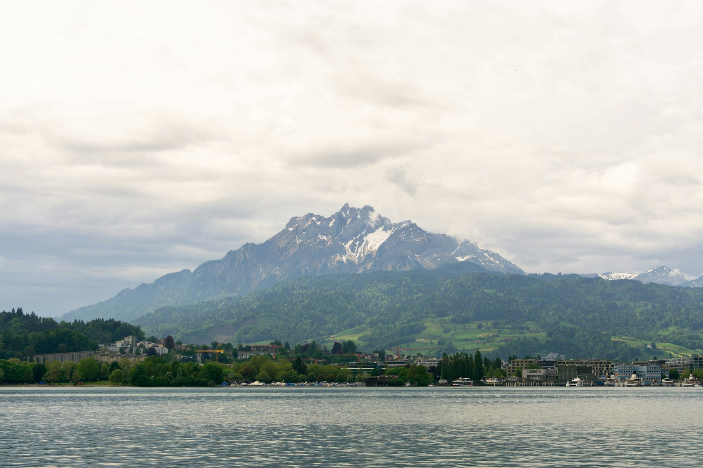
Alpine Villages
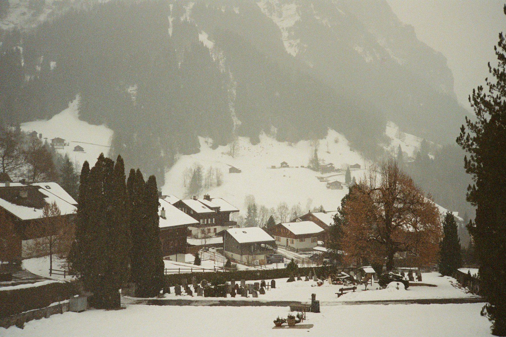
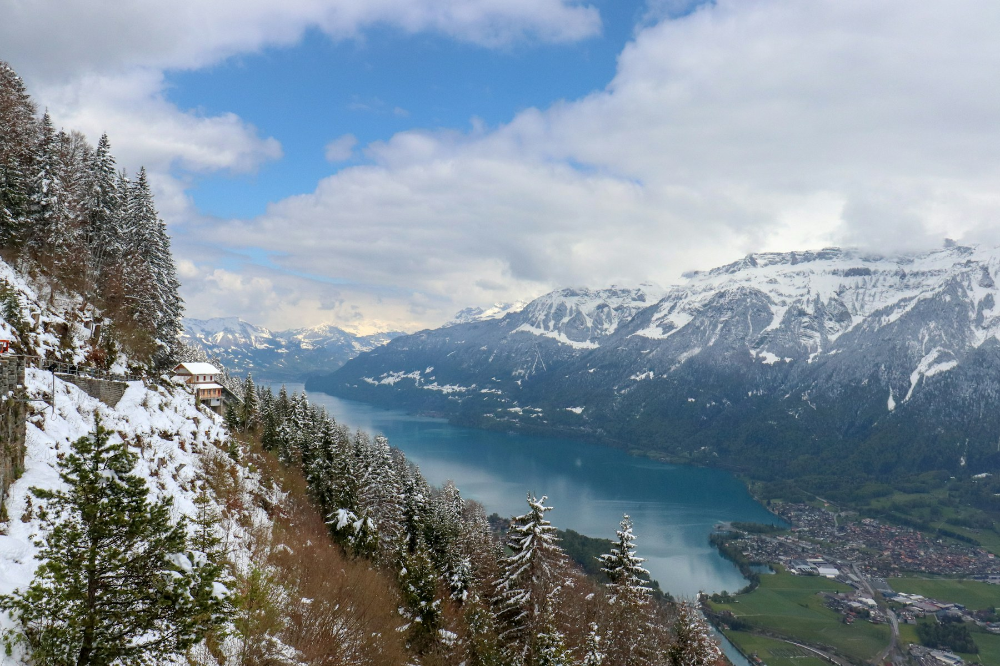
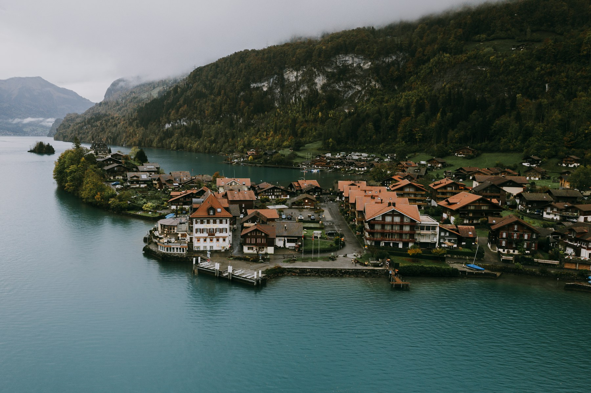
Mountain Icons
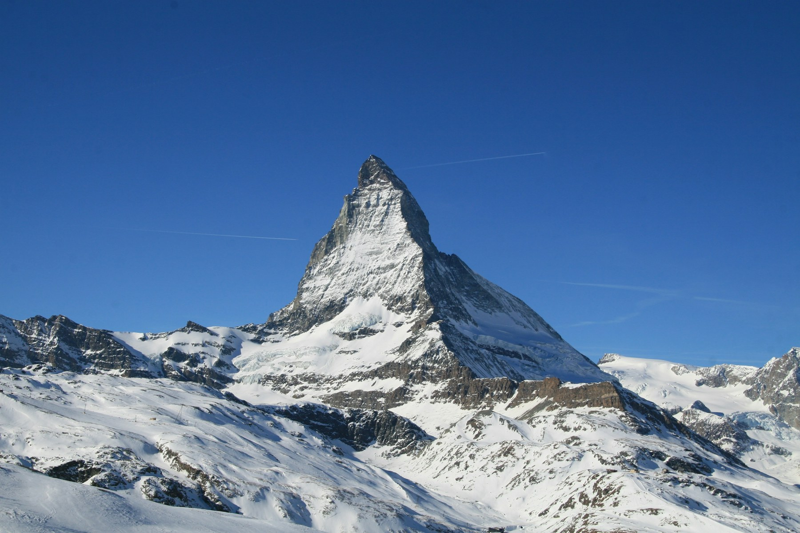
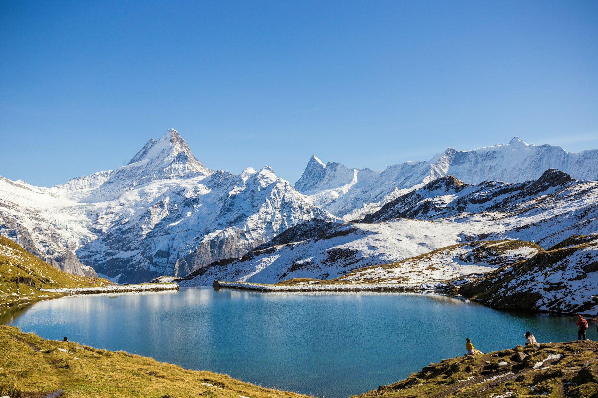
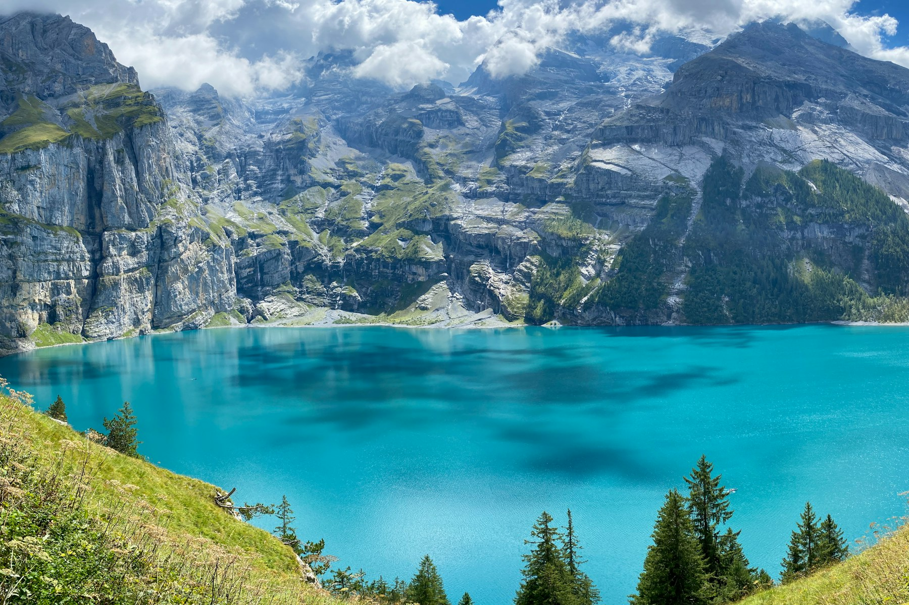
Lakeside Sophistication
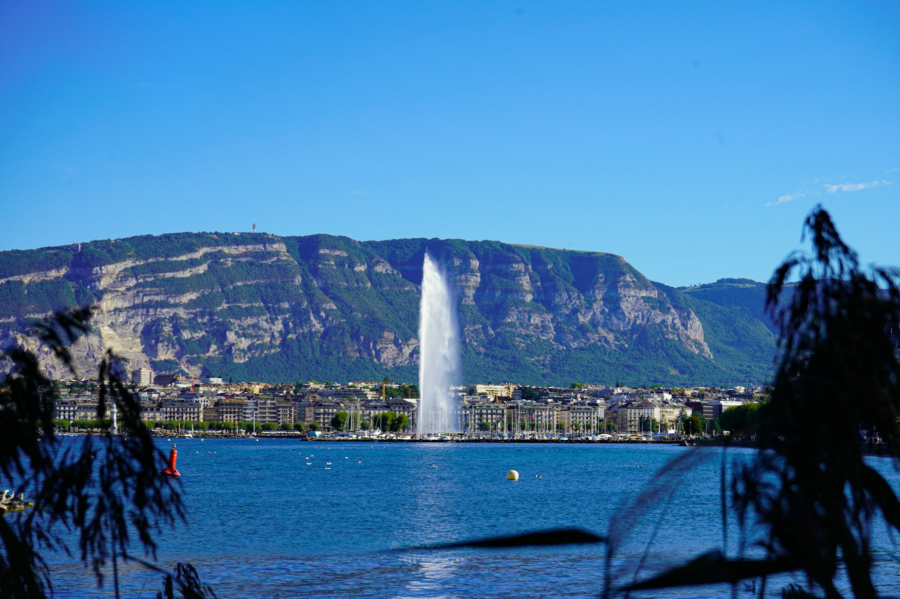
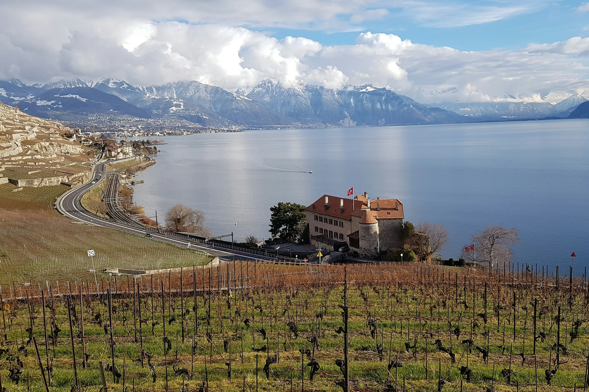
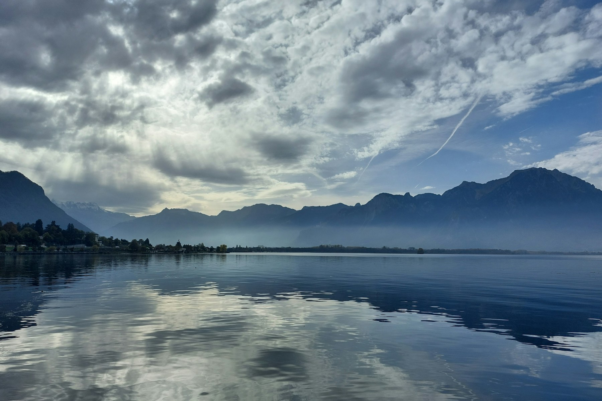
About The Team
Co-Founder
Yan leads operations, brand strategy and cross-cultural journey design across Europe and China.
Advisor & Technology Lead
Kevin supports quality, systems and execution standards to keep every journey delivery reliable.
Contact
Share your priorities, preferred pace and travel style. We will prepare a private proposal designed around you.
Email A Travel Designer